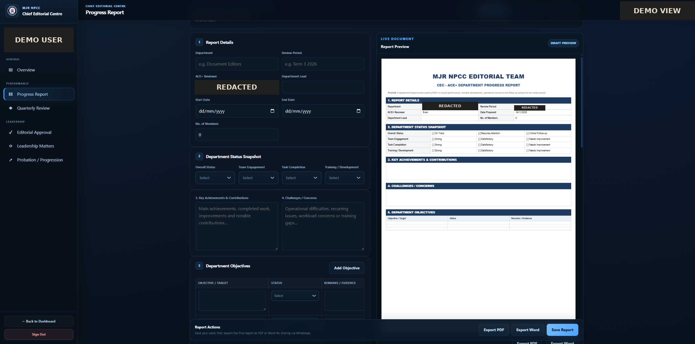

The challenge
When resources, schedules, training and reporting exist in separate places, members have to find the right information before they can begin their work. Consistent formats and clear responsibilities are also harder to maintain.
MJR NPCC Editorial Team / Digital transformation
An integrated platform designed around the way an editorial team works, learns and manages its responsibilities.
Explore the platform Read the project story ↓
Project scope, not usage statistics.
The operational Editorial Hub is a private workspace. This independent public edition presents selected, redacted interface images so viewers can understand the project without accessing member records or live administrative functions.
The development rationale
Editorial work involves documentation, communication, coordination and the development of members. The Hub brings these distinct responsibilities into a common environment, making the workflow easier to navigate and giving each function a dedicated place.
When resources, schedules, training and reporting exist in separate places, members have to find the right information before they can begin their work. Consistent formats and clear responsibilities are also harder to maintain.
Organise routine activities in a shared home workspace, then separate specialist responsibilities into purpose-built centres. Give common tasks predictable interfaces and support member development alongside everyday operations.
A common editorial environment with specialist workspaces for leadership, development, data and administration.
Daily operations, resources and member development.
Departmental oversight, reviews and structured progress reporting.
Quality, standards and editorial capability development.
Organisational records, data management and reporting.
Account governance and operational administration.
Conceptual workspace map; not an access, permission or network diagram.
Three examples of how the platform brings related steps together.

Communication
A library of standardised formats with a composition workspace and live preview supports consistent drafting without requiring members to start each message from scratch.
View the interface collection ↘
Member development
Training modules, prerequisites and progress indicators support a sequenced approach to learning. Mentorship complements the training system with guided development.

Reporting
Dedicated report composers bring defined fields and a document preview into the same workflow, supporting more consistent internal reporting.
Fifteen original, redacted interface previews. Explore by function or open any screenshot to inspect it at full size.
The operational platform combines modern web technologies, structured data management, access governance and integrated digital tools. The public showcase remains intentionally separate.
The project brings several areas of editorial work together. Its development can be understood through the capabilities introduced and refined, rather than unverified dates or release statistics.
Bring navigation, resources and routine coordination into a single editorial environment.
Introduce structured training, templates and mentorship to support editorial development.
Build dedicated leadership, data and administrative environments alongside the main Hub.
Integrate reporting interfaces and Editorial AI to support writing, learning and operational work.
These are thematic development stages, not a dated release record.
Future direction / proposed priorities
Potential next steps include improving accessibility, refining training and mentorship workflows, strengthening usability testing and reviewing information governance as the platform evolves.
MJR NPCC Editorial Team
From everyday coordination to structured learning and specialist administration, the Hub represents a sustained effort to design a more coherent editorial environment.
Revisit the showcase ↗